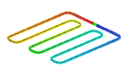

Other simulation objects
|
Boundary condition |
Description |
|
Joule Heating |
Use a to model joule heating in an electrical network. This allows you to study how electrical current or voltage in an electrical network affects temperature distribution in your model. |
|
Duct Flow Boundary Conditions |
Lets you model duct flow networks such as pipes and HVAC systems. |
|
Articulation |
You can account for the motion of a parts in your assembly, such as solar panels, antennas, robotic systems, and optical platforms, in your thermal model to provide an accurate picture of the heating cycles. |
|
Peltier Cooler |
Lets you model the effect of a thermometric cooler generated by a current or a voltage. |

